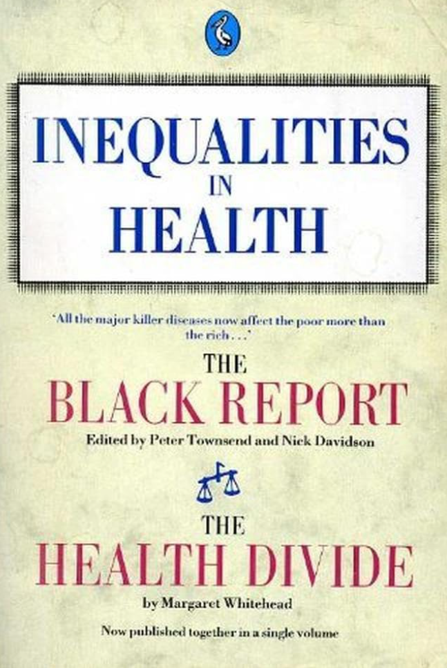
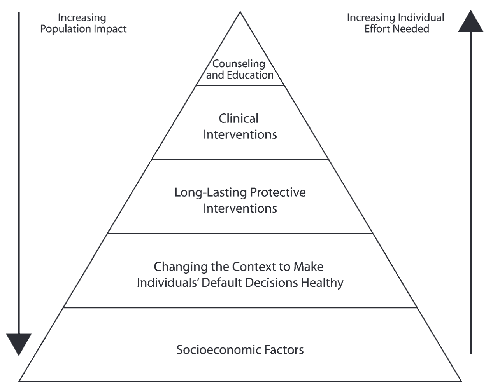

flowchart LR S["Socioeconomic <br/> position"] B[<div style="padding-top:4px"> Health behaviours </div>] M[Material conditions] P[Psychosocial experiences] H[Health outcomes] S --> B --> H S --> M --> H S --> P --> H
5. What explains health inequalities?
15 October 2026
We have measured health inequalities, compared them across countries, and examined how people perceive their causes. Today we ask a different question: what produces health inequalities? We move from three explanatory pathways to alternative theories and finally to their fundamental, structural causes. The central reading is McCartney, Collins and Mackenzie (2013).
Welcome back: connecting the first five sessions
After two self-study sessions and last week’s class with Dr Victoria A. Haerter, we return to a regular session together. We will briefly reconnect the different parts of the course. You do not need to redo the previous exercises.
| Session | Main question | What we take forward |
|---|---|---|
| 1 | What is health inequality? | Differences in health across social groups |
| 2 | How can we measure it? | Health outcomes, education, gaps and gradients; R basics |
| 3 | How does it differ across countries and time? | ESS comparisons, harmonisation, descriptive evidence |
| 4 (Victoria Haerter) | How do people perceive and explain it? | Causal attributions, responsibility and policy support; ISSP |
| 5 (today) | What produces these inequalities? | Competing theories, causal mechanisms and policy implications |
NoteTwo different meanings of “explanation”
In Session 4, we studied people’s beliefs about causes: who is held responsible, and how these judgements affect support for intervention. Today we study scientific explanations of causes: what mechanisms are plausible, what evidence supports them, and which political and economic conditions produce unequal risks.
These questions connect, but they must not be confused. A belief about a cause is not evidence that the cause is correct.
Learning objectives
By the end of this session, you should be able to:
- explain behavioural, material and psychosocial pathways to health inequality;
- distinguish these pathways from fundamental structural explanations, and recognise alternative accounts such as artefact and social selection;
- reconstruct and critically discuss the argument of McCartney, Collins and Mackenzie (2013);
- explain why causal explanations imply different policy responses;
- identify relevant ESS/ISSP measures and distinguish actual conditions and behaviours from attitudes about their causes; and
- extend the descriptive R workflow from Sessions 2–4 to examine a plausible explanatory factor, without claiming that an association proves causality.
NoteToday’s route: three levels of explanation
- Three pathways: How do behaviours, material conditions and psychosocial experiences influence health?
- Artefact and health selection: Might some of the observed association reflect measurement or reverse causation?
- The causes of the causes: Why are health-related resources, risks and opportunities distributed unequally in society?
You will test yourself with a 12-statement interactive quiz after Part 1, then apply the theories to survey measures and policy examples. Optional extensions are clearly marked.
The core reading: what (or who) causes health inequalities?
ImportantRequired reading
McCartney, G., Collins, C., & Mackenzie, M. (2013). What (or who) causes health inequalities: Theories, evidence and implications? Health Policy, 113(3), 221–227. https://doi.org/10.1016/j.healthpol.2013.05.021
McCartney and colleagues revisit four explanations discussed in the Black Report: artefact, selection, behavioural/cultural, and structural. Their central argument is that behavioural and other proximal mechanisms can help explain how inequalities arise, but structural conditions provide the strongest explanation of their fundamental causes. They argue that policy directed only at individual behaviours will have limited effects on health inequalities if underlying differences in power, resources and opportunities persist.

Part 2 — Artefact and health selection theories
The observed association between socioeconomic position and health does not necessarily mean that social disadvantage causes poor health. McCartney et al. (2013) revisit several alternative explanations, drawing on the Black Report and subsequent research.
2.1 Artefact theory: Is the inequality real?
Artefact theory suggests that observed health inequalities result from how we measure and classify social position and health, rather than reflecting genuine differences.
For example, changes in occupational classifications could create misleading trends in class-based mortality.
Evidence: Health inequalities remain visible across different indicators of socioeconomic position, including income, education, occupational class and area deprivation. McCartney et al. therefore reject artefact theory as a general explanation.
2.3 Genetics and cognitive ability: A common underlying cause?
Another version proposes that genetic differences in cognitive ability contribute to both socioeconomic position and health. In this account, cognitive ability is treated as a common cause rather than socioeconomic disadvantage being the fundamental explanation.
flowchart TD
A["Genetic endowment"] --> B["Cognitive ability"]
B --> C["Socioeconomic position"]
B --> D["Health outcomes"]
Evidence: Cognitive ability and health are associated, but this does not establish a genetic explanation. Both may be influenced by socioeconomic circumstances and early-life experiences. McCartney et al. find that the association between cognitive ability and mortality weakens or disappears in some studies after accounting for socioeconomic position. Changes in population-level cognitive test scores over time also challenge a predominantly genetic interpretation.
An alternative causal explanation
flowchart TD
A["Early-life<br/>socioeconomic circumstances"]
B["Measured cognitive ability"]
C["Health outcomes"]
A --> B
A --> C
The same association between cognitive ability and health can arise because both are influenced by earlier social conditions. This illustrates confounding: an observed association does not necessarily indicate that one variable causes the other.
What do these theories tell us?
The theories raise different questions:
| Explanation | Central question |
|---|---|
| Artefact | Are the observed inequalities partly produced by measurement? |
| Health selection | Does poor health lead to socioeconomic disadvantage? |
| Genetics / cognitive ability | Could a common individual characteristic explain both health and social position? |
| Meritocracy | Does social mobility concentrate health risks in particular socioeconomic groups? |
McCartney et al. conclude that these explanations may identify contributing processes, but none adequately explains the fundamental origins of health inequalities.
This leads to the next question: What produces the unequal social conditions in which people live?
Part 3 — The “causes of the causes”: fundamental and structural explanations
Fundamental and structural explanations
Identifying behavioural, material or psychosocial pathways helps explain how socioeconomic inequalities affect health. But it does not fully explain why health risks and resources are unequally distributed across social groups in the first place.
Fundamental and structural explanations shift attention to the underlying distribution of power, income, wealth and opportunities, and to the political and economic institutions that produce and reproduce these inequalities.
McCartney et al. (2013) review the evidence for different explanations of health inequalities and conclude that structural explanations provide the strongest overall account.
The full causal argument
flowchart TD A[Political and economic<br/>institutions, policies<br/>and power] R[Unequal distribution<br/>of income, wealth<br/>and opportunities] B[Behavioural pathways] M[Material pathways] P[Psychosocial pathways] H[Unequal health outcomes] A --> R R --> B R --> M R --> P B --> H M --> H P --> H
This account does not dismiss individual behaviours, material circumstances or psychosocial stress. Instead, it asks why different social groups are systematically exposed to different risks and have unequal resources to respond to them.
ImportantThe argument in one sentence
Proximate pathways explain how socioeconomic disadvantage affects health; structural explanations address why disadvantage and its health consequences are unequally distributed and persist.
From explanation to action: the Health Impact Pyramid
Frieden’s Health Impact Pyramid shifts attention from explaining health inequalities to identifying different levels of public health intervention.
At its base are interventions that change socioeconomic conditions. Moving upwards, the pyramid includes interventions that change environmental contexts, long-lasting protective interventions, clinical interventions, and counselling and education.

The pyramid suggests that interventions addressing broader socioeconomic and environmental conditions can achieve substantial population health benefits with less reliance on sustained individual action. However, interventions at all five levels can contribute to improving health.
Important distinction: Frieden’s framework concerns population health impact, not specifically the reduction of health inequalities. An intervention that improves average health does not necessarily reduce socioeconomic differences in health. This depends on how its benefits are distributed across social groups.
TipQuick policy check: Which level are we targeting?
Consider three hypothetical interventions to reduce diet-related disease:
- Information posters encouraging lower salt consumption.
- Rules requiring manufacturers to reduce salt in processed foods.
- Income support for households experiencing food insecurity.
Questions: Where would you place each in the pyramid? Which is most likely to reduce socioeconomic health inequalities, and what evidence would you need?
Suggested classification: Counselling/education; changing the context; socioeconomic factors. Effects on inequality cannot be inferred from the level alone: they depend on exposure, uptake, distributional effects and implementation.
Exercise 2 — Who or what should policy target? (5–8 minutes)
A canton wants to narrow its educational gradient in poor health and is considering three interventions:
- A. A campaign promoting exercise and healthier eating.
- B. Subsidised nutritious food for low-income households.
- C. Stronger standards for secure employment and safe working conditions.
For each, identify its main pathway and its position in the causal chain. Then ask: Could this improve population health without reducing the health gradient? What would you measure to find out?
TipDiscussion guide
A directly targets behaviour, although access to exercise and healthy food remains unequal. B targets a material constraint that can shape behaviour. C changes employment conditions, potentially affecting material and psychosocial exposures. None automatically reduces inequalities: coverage, take-up, implementation and effects across groups all matter.
TipOptional exercise 3 — From a mechanism to its causes
Choose one statement from the twelve-item quiz and complete the following chain:
Observed health gap → Immediate pathway → Unequal exposure → Institutions or policies shaping that exposure
Then identify one piece of evidence needed at each link.
Remember: A plausible causal explanation is not the same as a demonstrated causal effect.
Why policy implications depend on the level of explanation
A measure can improve average health while leaving the social gradient unchanged or even widening it. Recall Sessions 2–3: evaluate both absolute and relative differences. Addressing a proximate risk can be valuable, but McCartney et al. invite us to ask whether the distribution of resources and power is also changing.
From theory to data: Exploring the three pathways
How can we investigate behavioural, material and psychosocial explanations using survey data?
Two international survey programmes provide relevant measures:
- International Social Survey Programme (ISSP): Health and Health Care modules from 2011 and 2021.
- European Social Survey (ESS): Rounds 7 (2014/15) and 11 (2023/24), including modules on social inequalities in health.
These datasets allow us to examine whether health-related behaviours, living conditions and psychosocial resources differ across socioeconomic groups, and how they are associated with health outcomes.
1. Behavioural explanations
Both surveys include measures of smoking, alcohol consumption, diet and physical activity.
| Behaviour | ISSP 2011 | ISSP 2021 | ESS 7 | ESS 11 |
|---|---|---|---|---|
| Smoking | Q24 | Q22 | cgtsmke |
cgtsmok |
| Alcohol consumption | Q25a | Q23a | alcfreq |
alcfreq |
| Binge drinking | Q25a | Q23a | alcbnge |
alcbnge |
| Fruit and vegetables | Q25c | Q23c | etfruit, eatveg |
Same |
| Physical activity | Q25b | Q23b | dosprt |
dosprt |
Note: ISSP combines fruit and vegetable consumption in one question, whereas ESS measures them separately. Alcohol and physical activity measures also differ between the surveys.
NoteAdditional behavioural measures
ESS 7 and ESS 11
cgtsday(ESS 7 only): Number of cigarettes smoked per day.alcwkdy: Quantity of alcohol consumed on a weekday.alcwknd: Quantity of alcohol consumed on a weekend day.alcbnge: Frequency of binge drinking.etfruit: Frequency of fruit consumption.eatveg: Frequency of vegetable consumption.dosprt: Days with physical activity in the previous week.
ISSP 2011 and 2021
- Smoking: Smoking status and intensity.
- Alcohol: Frequency of drinking four or more alcoholic drinks on one day.
- Diet: Frequency of eating fresh fruit or vegetables.
- Physical activity: Frequency of activity lasting at least 20 minutes that increases breathing or sweating.
Question wording and response categories must be checked before comparing surveys.
2. Material explanations
Material explanations focus on unequal economic resources, living conditions, occupational exposures and access to healthcare.
| Dimension | ISSP 2011/2021 | ESS 7 and 11 |
|---|---|---|
| Household income | Background variables | hinctnta |
| Financial difficulties | — | hincfel |
| Employment status | Background variables | mainact |
| Employment insecurity | Background variables | uemp12m, wrkctra |
| Physical hazards at work | — | jbexpti, jbexecp, etc. |
| Housing problems | — | anypacc (ESS 7 only) |
| Financial barriers to healthcare | Q20a / Q18a | medtrnp |
| Childhood financial difficulties | — | fnsdfml |
NoteAdditional material measures
Occupational exposures (ESS 7 and 11)
jbexpvi: Vibrations from tools or machinery.jbexpti: Tiring or painful working positions.jbexpml: Manually lifting or moving people.jbexpmc: Moving heavy loads.jbexevl: Very loud noise.jbexevh: Very hot temperatures.jbexevc: Very cold temperatures.jbexera: Radiation.jbexecp: Chemical exposures.jbexebs: Smoke, fumes or dust.
These questions refer to exposure in any job ever held, not necessarily the current occupation.
Barriers to healthcare (ESS 7 and 11)
medtrun: Unable to obtain needed medical treatment.medtrnp: Could not afford treatment.medtrnt: Could not take time off work.medtroc: Other commitments.medtrnl: Treatment unavailable locally.medtrwl: Waiting list too long.medtrnaa: No appointments available.
ISSP healthcare access
- 2011 Q20 / 2021 Q18: Whether respondents needed but did not obtain medical treatment, including financial and other barriers.
Healthcare access barriers are possible consequences of material disadvantage, rather than direct measures of material living conditions.
4. Socioeconomic position and health outcomes
To investigate health inequalities, we also need measures of socioeconomic position and health.
| Dimension | ESS 7 and 11 |
|---|---|
| Education | eisced, eduyrs |
| Occupation | isco08 |
| Household income | hinctnta |
| Financial difficulties | hincfel |
| Self-rated health | health |
| Activity limitations | hlthhmp |
| Depressive symptoms | fltdpr, fltsd |
ISSP also includes standard background variables on education, occupation and income, together with self-rated health (Q26 in 2011; Q24 in 2021).
5. A different perspective: What do people believe causes illness?
The ISSP Health modules contain questions that closely match the explanations discussed in this session.
Respondents are asked whether severe health problems arise because of:
| Perceived cause | ISSP 2011 | ISSP 2021 |
|---|---|---|
| Behaviours that damage health | Q11a | Q8a |
| Environmental exposures at work or at home | Q11b | Q8b |
| Genetic factors | Q11c | Q8c |
| Poverty | Q11d | Q8d |
These variables measure beliefs about the causes of illness, not actual exposure to health risks.
They allow us to examine whether people from different socioeconomic backgrounds emphasise individual behaviour or structural circumstances when explaining health problems.
Exercise: Testing explanations of health inequalities
Task: Choose one of the three pathways (behavioural, material or psychosocial) and investigate how it relates to socioeconomic inequalities in health using ISSP or ESS data.
- Research question: Formulate a question about socioeconomic inequalities in health.
- Variables: Identify a measure of socioeconomic position, a health outcome and at least one relevant pathway variable.
- Analysis: Examine (a) whether the pathway variable differs by socioeconomic position and (b) whether it is associated with health.
- Interpretation: Are your findings consistent with the theoretical explanation? What can you conclude, and what remains uncertain?
Advanced option: Examine two or all three pathways and compare their associations with socioeconomic position and health.
TipNeed help? A step-by-step guide
If you are unsure where to start, follow this example using the European Social Survey (ESS).
Step 1: Start with a simple research question
Example: How is smoking related to educational inequalities in self-rated health?
We need three variables:
| Concept | ESS variable | Measurement |
|---|---|---|
| Socioeconomic position | eisced |
Education |
| Behavioural pathway | cgtsmke (ESS 7) |
Smoking |
| Health outcome | health |
Self-rated health |
Step 2: Choose your data
Download ESS Round 7 from the ESS Data Portal.
For this example, we use the Stata version (.dta) and focus on one country.
Install the necessary R packages once:
install.packages(c("haven", "dplyr", "ggplot2"))Load the packages and dataset:
library(haven)
library(dplyr)
library(ggplot2)
ess <- read_dta("ESS7.dta")
# Example: Switzerland
data <- ess |>
filter(cntry == "CH")Replace the filename with the actual name and location of your downloaded dataset.
Step 3: Inspect and prepare your variables
Before analysing the data, inspect the variables and their response categories.
# Inspect variable labels and categories
attr(data$eisced, "labels")
attr(data$cgtsmke, "labels")
attr(data$health, "labels")
# Frequency distributions
table(data$eisced, useNA = "ifany")
table(data$cgtsmke, useNA = "ifany")
table(data$health, useNA = "ifany")For a simple illustration, distinguish current smokers from non-smokers and compare broad educational groups.
data <- data |>
mutate(
education = case_when(
eisced %in% 1:3 ~ 1,
eisced %in% 4:5 ~ 2,
eisced %in% 6:7 ~ 3,
TRUE ~ NA_real_
),
education = factor(
education,
levels = 1:3,
labels = c("Lower", "Middle", "Higher"),
ordered = TRUE
),
smoking = case_when(
cgtsmke %in% c(1, 2) ~ 1,
cgtsmke %in% c(3, 4, 5) ~ 0,
TRUE ~ NA_real_
),
poor_health = case_when(
health %in% c(4, 5) ~ 1,
health %in% 1:3 ~ 0,
TRUE ~ NA_real_
)
)Important: These recodings are illustrative. Always verify the original value labels and missing-value codes in the codebook before using them. The educational categories are simplified and should not be interpreted as a validated classification of educational levels.
Step 5: Is health unequally distributed?
Calculate the percentage reporting poor or very poor health in each educational group.
data |>
group_by(education) |>
summarise(
poor_health_pct = mean(poor_health, na.rm = TRUE) * 100,
n = sum(!is.na(poor_health)),
.groups = "drop"
)Questions:
- Do respondents with lower education report poorer health?
- Are the differences substantively important?
Step 6: Is smoking associated with health?
Compare the prevalence of poor health between smokers and non-smokers.
data |>
group_by(smoking) |>
summarise(
poor_health_pct = mean(poor_health, na.rm = TRUE) * 100,
n = sum(!is.na(poor_health)),
.groups = "drop"
)You can also visualise the association:
data |>
filter(!is.na(smoking), !is.na(poor_health)) |>
mutate(
smoking_group = if_else(
smoking == 1, "Current smoker", "Non-smoker"
)
) |>
group_by(smoking_group) |>
summarise(
poor_health_pct = mean(poor_health) * 100,
.groups = "drop"
) |>
ggplot(aes(x = smoking_group, y = poor_health_pct)) +
geom_col() +
labs(
x = NULL,
y = "Poor self-rated health (%)"
) +
theme_minimal()Step 7: Interpret your findings
Return to the theoretical pathway:
Socioeconomic position → Smoking → Health
Ask yourself:
- Is smoking unequally distributed across educational groups?
- Is smoking associated with self-rated health?
- Are these observations consistent with a behavioural explanation?
- What other factors might explain the associations?
Remember: Even if all three variables are associated, this does not establish that smoking causes educational inequalities in health. Other variables, reverse causality and selection processes may contribute to the observed relationships.
The simple calculations also ignore survey weights and other aspects of the ESS sampling design. For a research paper, use appropriate weights and consider potential confounding factors.
NoteAdvanced extension: Comparing multiple pathways
Extend your analysis by selecting one variable for each pathway:
| Pathway | Example ESS variable |
|---|---|
| Behavioural | Smoking (cgtsmke) |
| Material | Financial difficulties (hincfel) |
| Psychosocial | Loneliness (fltlnl) |
You could investigate:
- Are all three factors associated with education?
- How strongly is each factor associated with self-rated health?
- Does the association between education and health change when these factors are included in a regression model?
For example, after preparing the variables appropriately:
model1 <- glm(
poor_health ~ education,
data = data,
family = binomial
)
model2 <- glm(
poor_health ~ education + smoking +
financial_difficulties + loneliness,
data = data,
family = binomial
)
summary(model1)
summary(model2)Here, financial_difficulties and loneliness are placeholders for variables that you must create from hincfel and fltlnl.
Interpretation: Compare the educational differences in predicted probabilities of poor health across models. Changes in regression coefficients, particularly logistic regression coefficients, cannot simply be interpreted as the proportion of inequality explained by each pathway.
Consider also whether the pathways interact or influence one another.
Codebooks
Note: Variable availability and country coverage may differ across rounds. Check the original codebooks for question wording, missing values and comparability.
Empirical research paper
The main assignment in this course is an empirical research paper in which you investigate a question related to health inequalities using survey data.
You can work individually or in a group of two students.
What is expected?
Your paper should:
- Formulate a research question about health inequalities, informed by relevant literature and theoretical explanations.
- Select appropriate data and variables from ISSP 2011/2021 or ESS 7/11.
- Conduct quantitative analyses to describe, compare or explain inequalities in health.
- Present and interpret the findings, relating them to the research question and existing literature.
- Discuss limitations and implications, including their relevance for public policy.
Your project may focus on one country, compare countries or investigate changes over time, depending on the research question and available data.
The empirical analysis should go beyond simply presenting descriptive statistics, but sophisticated statistical methods are not required. A clear research question, appropriate analyses and careful interpretation are more important than methodological complexity.
Requirements and assessment
| Component | Requirements | Weight |
|---|---|---|
| Empirical research paper | Individual: 2,500–3,000 words; group of two: 3,500–4,000 words | 65% |
| Presentation | Presentation of preliminary research findings | 25% |
| Active participation | Engagement in class discussions and exercises | 10% |
Further details on deadlines, presentations and submission will be provided in the course.
Register your preferred working arrangement
To help us plan the next sessions, please indicate whether you intend to work individually or in a group of two.
You do not need to have a final research question yet. If you already have a topic in mind, you can indicate it in the form.
Complete the research paper registration form
Please complete the form before our next session.
What have we learned?
In this session, we have examined different explanations of socioeconomic inequalities in health.
- Behavioural explanations: Health-related behaviours differ across socioeconomic groups, but individual choices are shaped by social circumstances.
- Material explanations: Unequal economic resources, working conditions and living environments affect health.
- Psychosocial explanations: Social relationships, stress, autonomy and adverse experiences can influence health through psychological and physiological processes.
- Fundamental and structural explanations: Political and economic institutions shape the unequal distribution of risks, resources and opportunities.
These explanations are complementary rather than mutually exclusive. Understanding how socioeconomic disadvantage affects health requires considering both immediate pathways and their underlying structural causes.
We have also seen how survey data can be used to investigate these explanations empirically, while recognising the limits of observational evidence for establishing causality.
Outlook: Next week
Session 6 — “Vertical” health inequalities (22 October 2026)
Next week, we will examine how socioeconomic position (SEP) is defined and measured, and why the choice of indicator matters for understanding health inequalities.
We will discuss:
- Education, income and occupation: What different dimensions of socioeconomic position do they capture?
- Subjective socioeconomic status: How does perceived social standing differ from objective indicators?
- Fundamental cause theory: Why might socioeconomic inequalities in health persist even when specific diseases, risks and treatments change?
- Empirical application: How does the observed pattern of health inequality change when we use different socioeconomic indicators in ISSP and ESS data?
Required reading: Galobardes, B., Lynch, J., & Smith, G. D. (2007). Measuring socioeconomic position in health research. British Medical Bulletin, 81–82(1), 21–37. https://doi.org/10.1093/bmb/ldm001
Preparation for next week
- Complete the research paper registration form and indicate whether you plan to work individually or in a group of two.
- Think about a topic related to health inequalities that interests you. You do not need a final research question yet.
- Read Galobardes et al. (2007) and consider why education, income and occupation might produce different patterns of health inequality.
We will also spend time in class developing your initial ideas into focused, feasible research questions for the empirical research paper.
References
Bartley, Mel, and Michelle Kelly-Irving. 2025. Health Inequality. An Introduction to Concepts, Theories and Methods. 3rd ed. Polity Press.
Dahlgren, Göran, and Margaret Whitehead. 1991. “Policies and Strategies to Promote Social Equity in Health. Background Document to WHO - Strategy Paper for Europe.” Institute for Futures Studies, Arbetsrapport 14 (January).
Frieden, Thomas R. 2010. “A Framework for Public Health Action: The Health Impact Pyramid.” American Journal of Public Health 100 (4): 590–95. https://doi.org/10.2105/AJPH.2009.185652.
McCartney, Gerry, Chik Collins, and Mhairi Mackenzie. 2013. “What (or Who) Causes Health Inequalities: Theories, Evidence and Implications?” Health Policy 113 (3): 221–27. https://doi.org/10.1016/j.healthpol.2013.05.021.
McEwen, Bruce S. 1998. “Stress, Adaptation, and Disease: Allostasis and Allostatic Load.” Annals of the New York Academy of Sciences 840 (1): 33–44. https://doi.org/10.1111/j.1749-6632.1998.tb09546.x.
Wilkinson, Richard, and Kate Pickett. 2009. The Spirit Level: Why More Equal Societies Almost Always Do Better. Allen Lane.
Wilkinson, Richard, and Kate Pickett. 2018. The Inner Level: How More Equal Societies Reduce Stress, Restore Sanity and Improve Everyone’s Well-Being. Allen Lane.